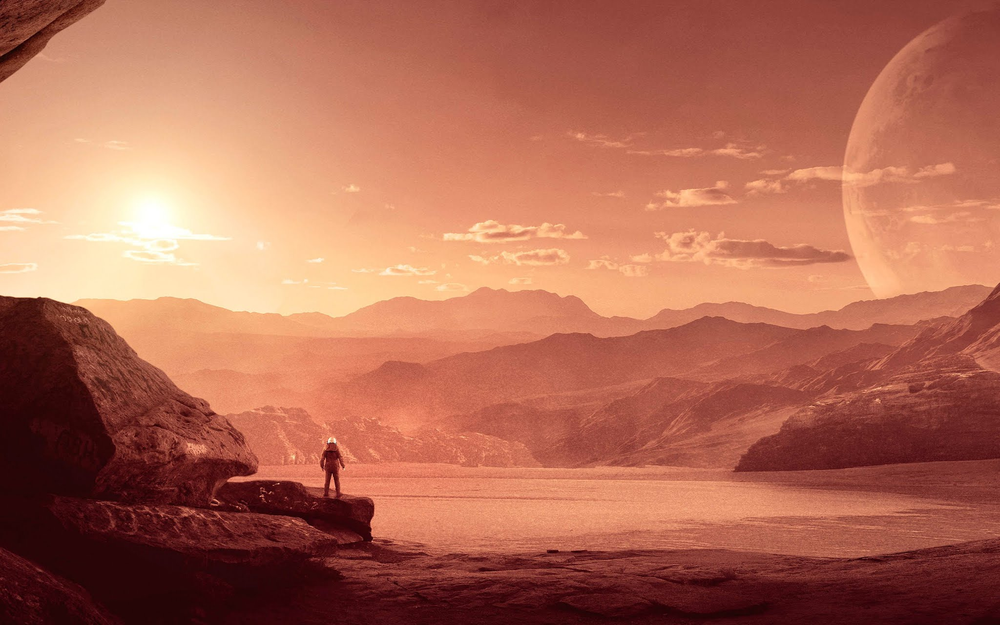

Ida do homem à marte está proxima!
Por Davi Vieira | 12 Fevereiro 2021 às 16h30

Ida do homem à marte está proxima!
Por Davi Vieira | 12 Fevereiro 2021 às 16h30
Por Davi Vieira | 12 Fevereiro 2021 às 16h30
Por Davi Vieira | 12 Fevereiro 2021 às 16h30
- Se depender da Nasa e de sua dedicação, daqui a 20 anos já teremos os primeiros seres humanos a pisar no solo do planeta vizinho.
Logo depois que Neil Armstrong pisou na Lua, em 1969, começaram as especulações sobre qual seria o próximo "pequeno passo para o homem e grande salto para a humanidade". Marte, um dos planetas mais próximos da Terra, surgiu como a óbvia opção para uma viagem tripulada, mas o custo alto e as dificuldades técnicas impediram a continuidade da missão no século 20. Embora o planejamento para uma viagem a Marte tenha evoluído muito, continua sendo um sonho que está a 55 milhões de quilômetros de distância. Mas o que falta para a humanidade pisar no planeta vermelho pela primeira vez?
imagem ilustrtiva: Homem em marte
Há, de fato, projetos sólidos para chegarmos lá. Elon Musk, a mente por trás da SpaceX, é quem tem os planos mais arrojados para visitar (e colonizar) Marte: a ideia é pisar no planeta vizinho em 2024, usando naves como a Starship. A Nasa tem um cronograma um pouco mais folgado para isso: chegar lá em 2034. Ivan Gontijo, brasileiro que faz parte da agência, já afirmou que "os problemas técnicos são gigantescos"....
Enquanto filmes como "Perdido em Marte" nos ajudam a sonhar com os primeiros passos em território marciano, as missões mais concretas são as não-tripuladas. No ano que vem, quatro missões têm previsão de sair da Terra para estudos em nosso vizinho. São elas: China Mars Probe (da agência espacial chinesa), Mars 2020 (da Nasa, que deve levar um helicóptero a Marte), Hope Mars Mission (dos Emirados Árabes Unidos) e Exomars (parceria entre a União Europeia e a Rússia). O fato é que, seja para agências governamentais ou para empresas privadas, ainda há grandes desafios para nós, humanos, chegarmos ao astro sãos e salvos. Confira abaixo os seis principais motivos...
Uma foto capturada por astronautas da Estação Espacial Internacional (ISS) em dezembro do ano passado está trazendo à tona um crime ambiental grave:
por trás do brilho dos aparentes “rios de ouro” retratados esconde-se o reflexo do sol em milhares de poços de lama cavados por mineradores ilegais
em uma região da Amazônia Peruana.
As imagens são uma prova magnificada da mineração de ouro predatória na região de Madre de Dios, no sudeste do Peru. A extensa região,
que já foi um santuário de espécies como macacos, onças e borboletas, enfrenta um processo de destruição sem escalas causado pela ganância
e por interesses de uma indústria não regulamentada.
permitiram o surgimento e a manutenção da vida na Terra é o fato de o planeta ser geologicamente ativo, com terremotos e vulcões..
A abundância inicial de tório nas gêmeas solares foi comparada com as de ferro, silício – um indicador da espessura e massa do manto convectivo em planetas rochosos – e mais dois elementos pesados: o neodímio e o európio. .
Esta é a nona missão da Nasa à superfície de Marte. A chegada está prevista para fevereiro..
Atualizados 3 minutos atrás
O Perseverance, sonda marciana de última geração da Nasa, a agência espacial dos Estados Unidos, foi lançada do Cabo Canaveral, na Flórida, em um foguete Atlas 5, nesta quinta-feira (30), em uma missão de US$ 2,4 bilhões para procurar vestígios de uma possível vida passada no planeta vizinho da Terra..
Em uma compilação das diversas fotos, feita pela revista Nature, o "filme" mostra uma bolha de luz assimétrica girando em torno do Powehi, o buraco negro supermassivo no centro da galáxia M87. É claro que nem tudo são imagens: além dos dados do Telescópio Horizonte de Eventos, a equipe usou modelos matemáticos para mostrar como o entorno do buraco negro evolui ao longo do tempo..
Atualizados 3 minutos atrás
A aparência dos arredores do buraco negro muda ao longo do tempo à medida que sua gravidade agita o material ao redor, criando um turbilhão que muda constantemente..
1. NÃO EXISTE SOM NO ESPAÇO: No espaço não existe ar, ou seja, é um grande vácuo. Como o som são ondas que se espalham pelo ar, ele não têm como se locomover entre as estrelas e planetas. Sabe aquelas explosões espaciais nos filmes? Estão cientificamente corretas aquelas que não têm som nenhum.
2. PLANETAS QUE É IMPOSSIVEL PISAR: Júpiter, Saturno, Urano e Netuno. Esses quatro planetas são gasosos, ou seja, não possuem uma superfície sólida. Dessa maneira, nossos astronautas precisariam desenvolver formas diferentes de explorar esses mundos.